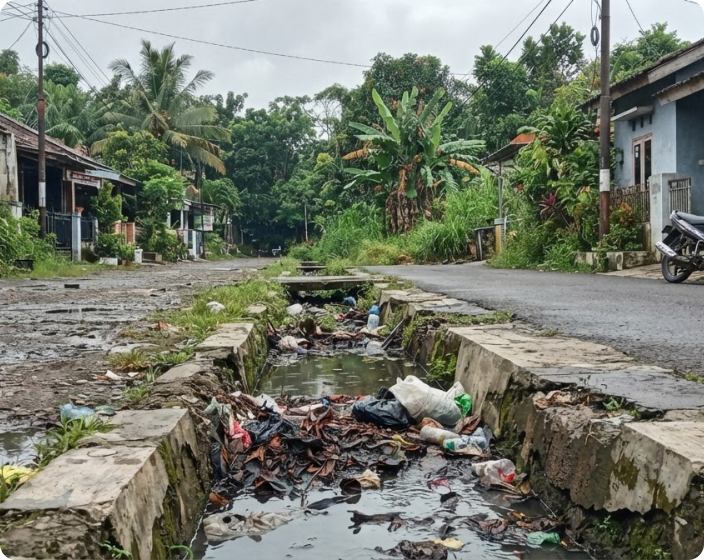

Kembali ke laporan saya
Detail laporan
SW-261012-018
Saluran tersumbat di Jl. Merdeka
Tinggi
Menunggu ditangani
Dilaporkan oleh: Akmal Maulana • 12 Okt 2026, 08.42 WIB
Rincian kejadian

Foto pelapor • Diverifikasi sistem AI
Kategori
Drainase & genangan
Lokasi
Jl. Merdeka No. 18, RT 02 / RW 04
Sukapadang, Tarogong, Kota Garut
Deskripsi pelapor
Saluran air di depan rumah No. 18 tersumbat sampah. Air menggenang sekitar 15 cm hingga ke bahu jalan sejak pagi. Akses pejalan kaki terganggu, terutama saat warga berangkat sekolah.
Riwayat tindak lanjut
Laporan dikirim
12 Okt 2026, 08.42 WIB
Laporan masuk beserta data koordinat GPS dan foto kejadian.
Menunggu ditangani
12 Okt 2026, 09.10 WIB
Petugas memvalidasi urgensi dan memprioritaskan penanganan.
Penugasan tim belum ditetapkan
Tahap berikutnya
Tim teknis lapangan akan dikerahkan ke titik lokasi.